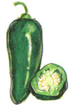

(LEFT) Jalape?o: Probably the most fluently used and most available chili, jalape?o are picked green commercially but we let ours ripen until they're red, which makes them even hotter. This firm, compact chili is easy to chop up and use in dishes where you want some heat.